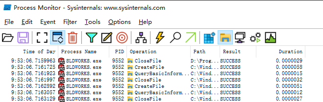
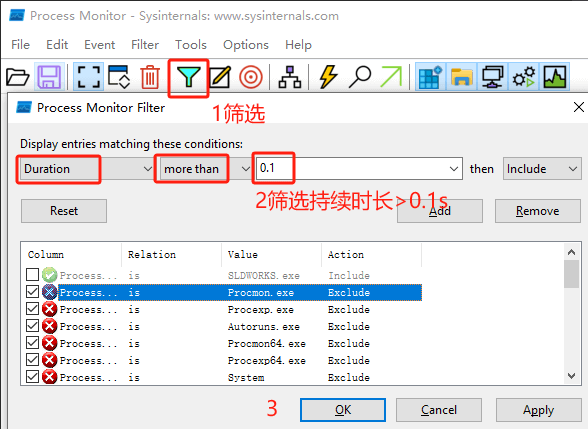
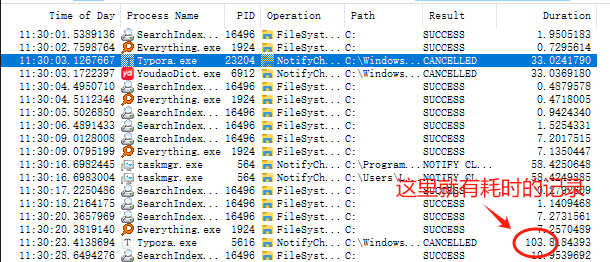

Procmon进程监视器
Process Monitor是微软推荐的一款系统监视工具。能够帮助使用者对系统中的任何文件、注册表操做进行监视和记录。经过注册表和文件读写的变化，有效帮助诊断系统故障或发现恶意软件、病毒及木马。
它整合了旧的Sysinternals工具、Filemon与Regmon，其中Filemon专门用来监视系统中的任何文件操做过程，Regmon用来监视注册表的读写操做过程。
进程监视器 - Sysinternals | Microsoft Learn下载
界面
1 | 图标功能： |
使用场景
运行Process Monitor建议使用管理员模式，当你启动Process Monitor后，它就开始监听三类操做，包括：文件系统、注册表、进程。
注册表
Process Monitor记录全部的注册表操做并显示使用常见的注册表根键缩写来显示注册表路径（如HEKY_LOCAL_MACHINE 缩写为HKLM）。想在列表中清除注册表的操做，在Process Monitor工具栏上反选“注册表”按钮，再次按下能够增长对注册表的监听。
文件系统
Process Monitor显示全部的Windows文件系统活动，包括本地磁盘和远程文件系统。它会自动探测到新的文件系统设备并监听它们。全部的系统路径都会被显示为相对于在用户会话中的一个文件系统操做的执行。想在列表中清除文件系统的操做，在Process Monitor工具栏上反选“文件系统”按钮，再按下能够增长对文件系统的监听。
网络
Process Monitor使用“Windows事件跟踪(ETW)”来跟踪并记录TCP和UDP活动。每一个网络操做包括源地址和目标地址，还有发送和接受到的一些数量的数据，但不包括真实的数据。想在列表中清除网络的操做，在Process Monitor工具栏上反选“网络”按钮，再次按下能够增长对网络的监听。
进程
在Process Monitor的进程/线程监听子系统中，它将跟踪全部进程/线程的建立和退出操做，包括DLL和设备驱动程序的加载操做。想在列表中清除进程的操做，在Process Monitor工具栏上反选“进程”按钮，再次按下能够增长对进程的监听。
性能分析
这个事件类能够在“选项”菜单中启用。当处于“启用”状态，Process Monitor扫描系统中全部活动的线程并为每一个线程生成一个性能分析事件，记录了内核模式和用户模式的CPU时间消耗，还有许多在上个性能分析事件后已被线程执行的环境开关。
监控时长
 其他
列内容
1 |
其他
SysInspector:监控的是某一时刻的系统状态，而ProcessMonitor可以监控一段时间的进程行为
Sysmon:相比之下，ProcessMonitor监控的进程事件更丰富、更全面，故导出文件也大得多
ProcessExplorer:相当于简化版，只能持续査看进程，没法将一段时间的进程行为录制下来，但可结束进程
Wireshark:抓包工具，侧重数据流，但无法提供进程信息